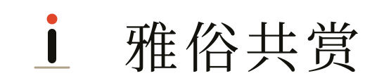
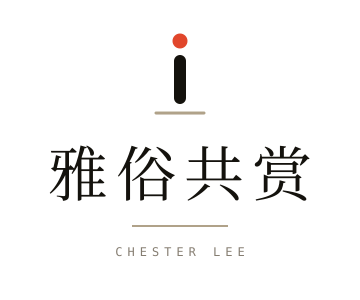
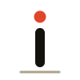
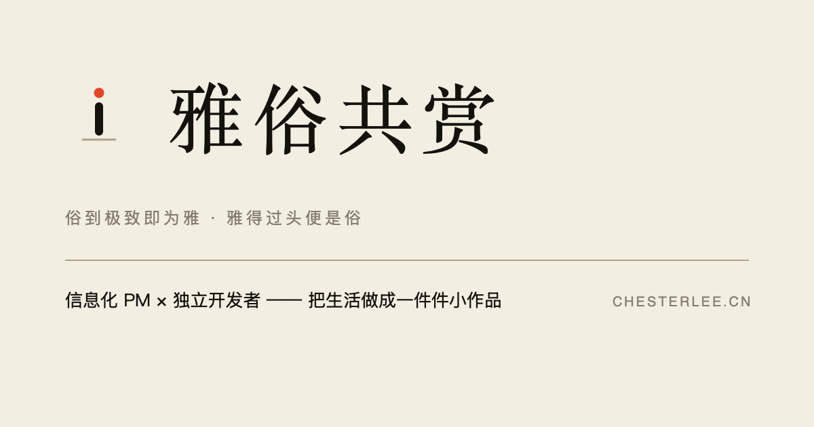

Brand Book · v1.1
张诚 Chester Lee · chesterlee.cn
一个小写的 i，一句老话。
雅的看得下去，俗的也爱得起来——这就是这个站的全部主张。
01 — 品牌主张
Slogan（主句）
主句 · 单独使用
俗到极致即为雅
对句 · 必须与主句同现
雅得过头便是俗
俗到极致即为雅，雅得过头便是俗——是谓 i雅俗共赏。
把生活做成一件件小作品。
最后，祝你成为超人。
可接一行小字解释：在生活中游刃有余的人。再引尼采：「人应该是被超越的某种东西。」
| 要 | 不要 |
|---|---|
| 具体：2000 公里、1400 小时、10 场半马 | 形容词堆叠：热爱生活、极致追求 |
| 平视：把事说清楚，可以自嘲（「跑不快」） | 喊口号、加感叹号、用「赋能 / 闭环 / 生态」 |
| 克制：一段只说一件事 | 一段塞十个观点，配一堆 emoji |
i = 我（I），也是这个标志的本体；雅俗共赏 = 一句老话，雅的能看，俗的也爱看。 合起来是「我，既雅也俗」。所以网站上不写履历，只放作品和照片——做事本身比形容更可信。
02 — 标志
Concept：一个点 + 一条竖线 + 一条纸线
| 点 | 朱红一记落款，也是读到的一句重点、跑过的一个路标 |
| 竖线 | 小写 i 的竖；同时是一个「立着的人」 |
| 纸线 | 纸的边线，也是地平线——人站在纸上 |
| 整体 | 小写 i = 我。放进名字里，这个 i 就是「i雅俗共赏」的 i，不必再写第二遍 |

A · 横向组合（主用）536 × 118

B · 竖版组合360 × 300

C · 图形标（无字）100 × 100
D · 反白（朱红底）暖白不用纯白
以朱红点的直径 d 为单位，标志四周至少留 1d 的空白，不与文字、边框、图片贴边。
| 场景 | 最小尺寸 | 用哪个组合 |
|---|---|---|
| 浏览器标签 / 手机桌面 | 16 px | 图标（C） |
| 顶栏 / 名片 / 页脚落款 | 横向组合 ≥ 120 px 宽 | A 或 C |
| 方形位（头像 / 封面 / 分享卡） | 竖版 ≥ 72 px 宽 | B / 朱印图标 |
| 必须单色（印章、钢印、单色印刷） | 16 px | 单色标（墨色） |
不拉伸压扁
不换主色
不拆开点与竖线
不压在杂色上
另外三条：不加描边 / 阴影 / 发光；不用纯白代替暖白；小于最小尺寸时只用图形标，不硬塞文字。
03 — 色彩
全部取自现有网站（web/assets/css/site.css），不新增颜色
纸 70% 暖白 20% 墨 7% 朱 3%
朱红是「一点」，不是「一片」：点在标志上、标签上、最新一条上。整块朱红底只留给作品区通栏，一页最多一处。
底 #17150F、字 #F2EEE2、线 #322D24，朱红不变。暗色下不要给朱红加亮度，会变成橘色。
墨在纸上约 15:1，朱红上的暖白约 4.6:1（仅用于 ≥18px 的粗体或图形），正文永远用墨色，不用朱红写长句。
04 — 字体
标题 / 封面 / 分享卡
雅俗共赏
Georgia → Songti SC → 宋体
字距 +0.1em
顶栏字标 / 正文
雅俗共赏
PingFang SC 700 · 字距 +0.01em
正文行高 1.75，字号 ≥15px
眉标
WORKS · WRITING
等宽 · 全大写
字距 +0.2em，只用英文
| 规矩 | 说明 |
|---|---|
| 顶栏用黑体 | 界面里的小字标（顶栏品牌名）用系统黑体加粗——Windows 与手机上都稳； 封面、大标题、分享卡仍用衬线，保留纸本气质 |
| 图标配字放大 | 图形标墨迹只占画布 60%，与字并排时放大到 1.42em 才与汉字视觉等高 |
| 中文不倾斜 | 强调用加粗或朱红，不用斜体、不用描边 |
| 英文少用 | 只做眉标、副标题、域名；不写整段英文 |
| 左对齐 | 短句一律左对齐，不居中、不两端对齐 |
| 不引外部字体 | 只用系统字体，保证零加载、零依赖（站点的硬规矩） |
05 — 图形语言
01 · 大图优先
一张图占一屏的 80%，字只做注解。照片不裁成圆角，不叠滤镜，不加边框。
02 · 一条细线
分隔只用 1px 纸线（#B0A289），不用色块、不用阴影、不用卡片叠卡片。
03 · 一点朱红
每屏最多一处朱红：一个点、一个标签、一行「最新」。
04 · 留白
段与段之间 ≥1.5 行高；页面左右边距手机 20px、桌面 40px 起。
06 — 网站图标
朱红底 + 暖白的 i。尺寸再小也不加文字。
把 brand/assets/ 里的 favicon* 复制到 web/assets/img/，在该页 <head> 里加：
<link rel="icon" href="/assets/img/favicon.svg" type="image/svg+xml">
<link rel="icon" href="/assets/img/favicon-32.png" sizes="32x32">
<link rel="apple-touch-icon" href="/assets/img/favicon-180.png">
<meta name="theme-color" content="#F2EEE2">SVG 给新浏览器（任意缩放都清晰），32px PNG 兜底老浏览器，180px 给 iOS 加到主屏。
07 — 应用示范
① 顶栏：22px 图标 + 名称，链接靠右
② 方形位：竖版组合
微信悦读
③ 作品卡角标：14px 单色标，透明度 35%
页脚：图标做落款，不抢正文
④ 页脚落款：18px

1200 × 630 · assets/og-card.pngog:image
08 — 资产清单
brand/assets/| 文件 | 用途 | 尺寸 |
|---|---|---|
logo-primary.svg | 横向组合（主用） | 536 × 118 |
logo-stacked.svg | 竖版组合（方形位） | 360 × 300 |
logo-mark.svg | 图形标（无字） | 100 × 100 |
logo-seal-mono.svg | 单色标（印章 / 单色印） | 100 × 100 |
favicon.svg | 网站图标（矢量，首选） | 64 × 64 |
favicon-16 / 32 / 512.png | 浏览器标签、书签 | 16 / 32 / 512 |
favicon-180.png | iOS 主屏、公众号头像 | 180 × 180 |
favicon-maskable.svg / -512.png | 安卓自适应图标（可裁切） | 512 × 512 |
og-card.svg / .png | 链接分享卡 | 1200 × 630 |
1. 图标已复制到 web/assets/img/：favicon.svg、favicon-16 / 32 / 180 / 512.png、favicon-maskable.svg / -512.png、og-card.png。
2. 已写入全站 59 个页面的 <head>：首页 / 关于我 / 作品 / 名片 / 文章列表 / 分享列表，25 篇文章页、25 个短链跳转页、3 个分享详情页。tools/sync_articles.py 的模板同步带上了，以后新增文章不会再漏。
3. 首页已加 og:image，分享时显示这张 1200 × 630 卡片。
| v1.0 | 2026-11-13 |
|---|---|
| 初版：确定「一点朱红」图形标、主句、色彩与字体规则、网站图标与分享卡。 | |
| 落地 | 2026-11-14 |
| 图标接入全站 59 个页面与文章生成模板；纸线光学居中微调（y 93 → 90），手册内联图形与资产文件对齐。 | |
| v1.1 | 2026-11-14 |
| 顶栏字标改系统黑体加粗、图形标放大到 1.42em（与汉字视觉等高）；04 节由「衬线说话」改为「衬线做标题，黑体做界面」，新增「顶栏用黑体」「图标配字放大」两条规矩；全站页面标题统一为纯品牌名。 | |
一个点，一条线，一句话。够了。
i雅俗共赏 · 品牌手册 v1.1 · 2026-11-14